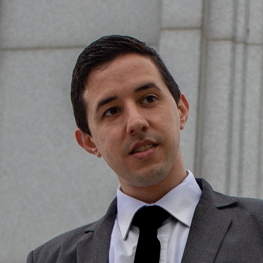

Damian Onnainty | WDD 130
HI! My name is Damian Alejandro Onnainty, I'm from Bariloche, Argentina, and I'm 32 years old.
My family consists of my beloved wife, and two beautiful little girls, Nina and Bianca, plus a very lazy kitten named Pancha.
I love playing table tennis, I'm playing every monday, wednesday, friday. Also I love repairing things, like mechanics for my old 93 Honda Civic. In my free times, I love
looking for new little glitches or new little sounds that might indicate something that could use repair, just to have an excuse to spend time fixing it.
I currently live in Argentine Patagonia, surrounded by mountains, lakes and forests. The energy of nature is strong here and I love trying to connect with it whenever I can. Hiking to the top of the mountains helps me feel closer to the heavenly father.